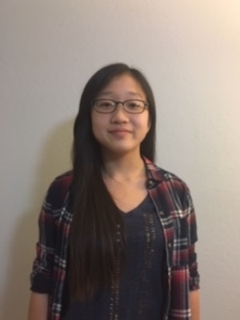
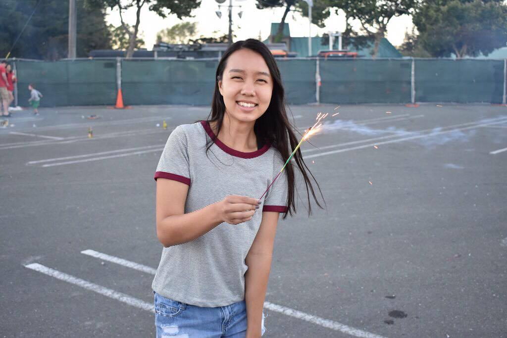
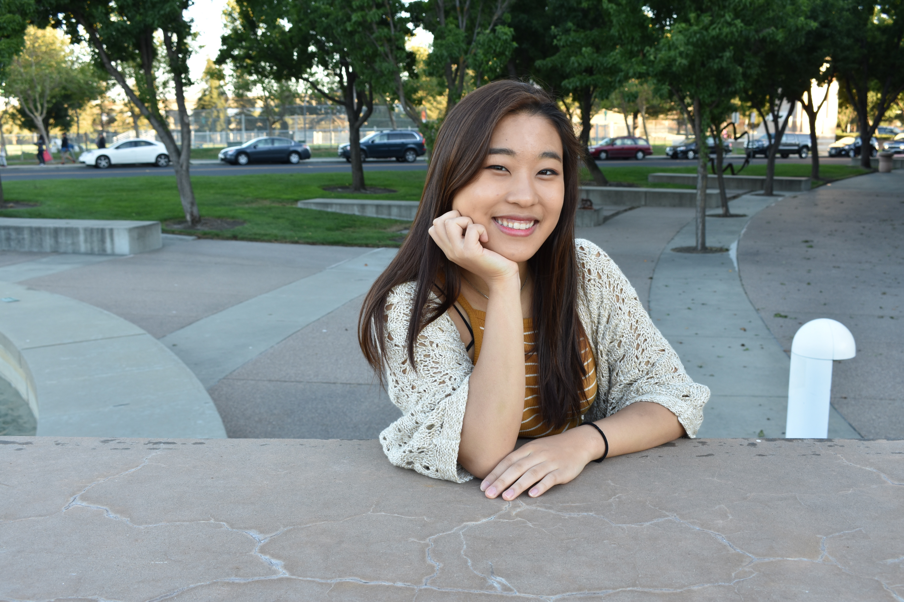
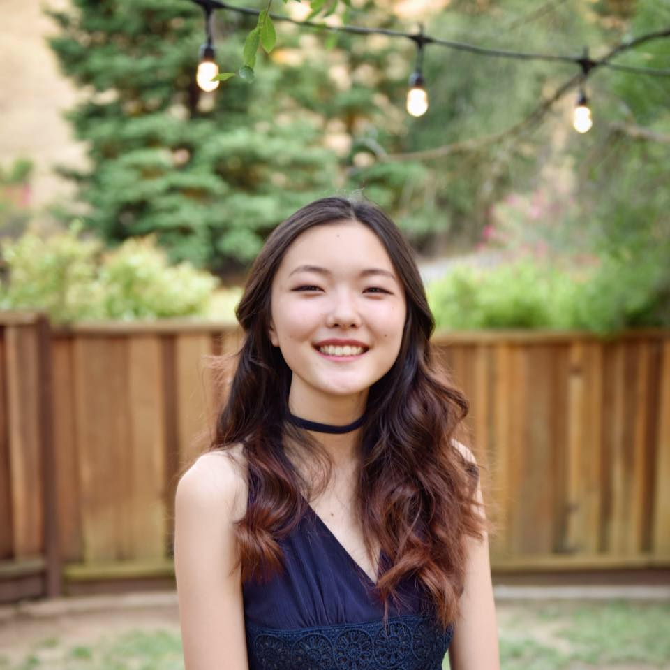
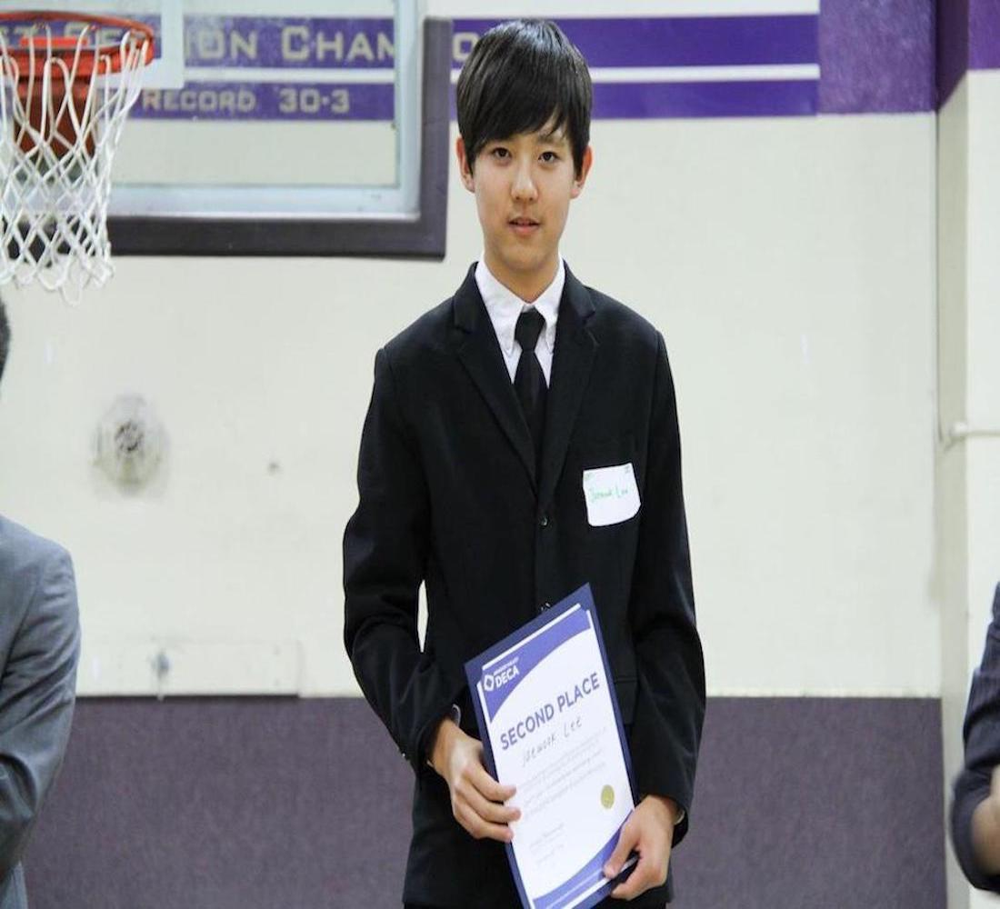
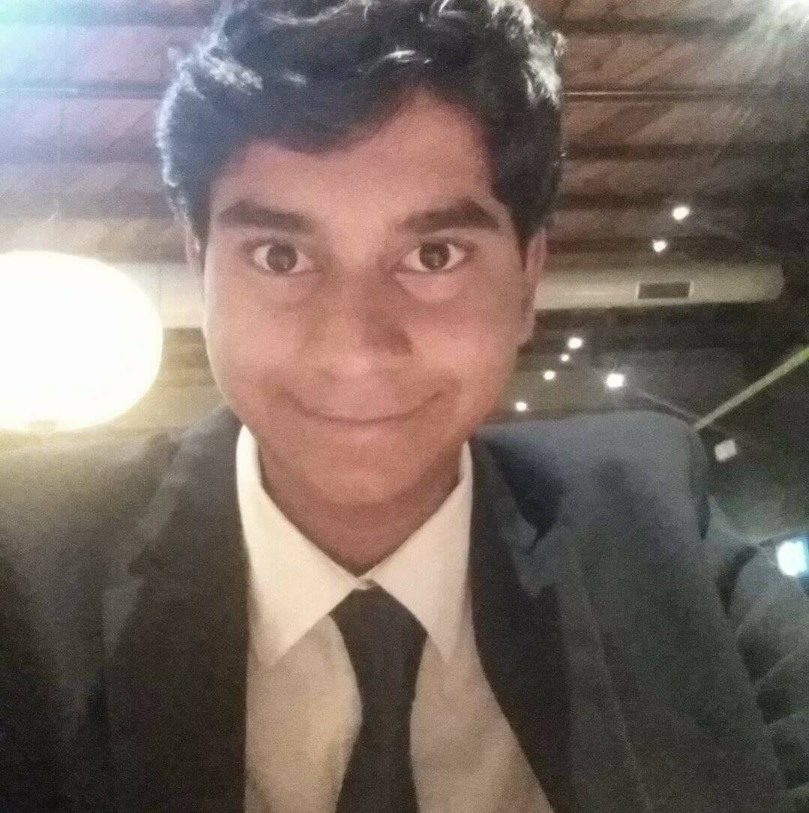

Hello! I'm Michelle Yoon, a senior at Amador Valley High School. I am proud to serve you as LiNK Club's President for 2017-2018! I'm an upbeat and enthusiastic gal who loves vintage coffee shops and striped shirts. In my free time, you would most likely find me playing viola or putting up motivational sticky notes that I completely ignore throughout the school year. I definitely look forward to serving you through LiNK Club, and I cannot wait to see what the future holds. 🍎

Vice President. Nora Youn
Hi there! My name is Nora Youn, and I'm the Vice President of the 2017-2018 Amador LiNK Club. I am an incoming sophomore. Some fun facts are that I have lived in three different countries(South Korea, India, and the U.S), I play the violin, and I love eating Korean food. Looking forward to a great year at LiNK!
Treasurer. Lucy Kim
Lucy Kim, a senior at Amador Valley High School, is on her second year being the treasurer for LiNK. On her free time, she enjoys playing the violin and listening to music. A side fact is that she spends the majority of her money on makeup so she is always broke. Hah. She hopes to promote LiNK as much as she could and free those who are trapped in North Korea.

Secretary. Kyra Trinh
Year : seniorFun Facts: Im color guard captain. And i really like winnie the pooh and hamilton

Public Relations. Daisee Kim
Hey guys! I'm Daisee and an upcoming senior. Im one of LiNK's public relations officer. Some fun facts about me are that I play the cello and enjoy art. I love watching movies and hanging out with friends. Also, I like walking on the left side of people rather than the right. Can't wait to meet everyone!

Public Relations. Cathy
Hello I am Cathy and I am very excited to be one of your senior Public Relations Officers for this year! Fun fact about Cathy Yoo: I can gulp water really loudly. I look forward to getting to know you guys and making the best of this year :)

Info & Tech Manager. Jaewook Lee
Hello, I am Jae. I am a senior and a tech manager for LiNK. Fun fact is that I play tennis even though I dont like getting tanned.

Info & Tech Manager. Mayank Sharma
Greetings, peasants. I'm a senior and one of LiNK's Technology Officers. As part of my massive superiority over the vast majority of the population, I have memorized 63 digits of pi, beaten Battletoads (without save states), and taught several 5-year-olds to quote Nietzsche. I am also 10% of Taco Bell's consumer base, a communist, and a connoisseur of Netflix. I enjoy math. Still feelin' the Bern.